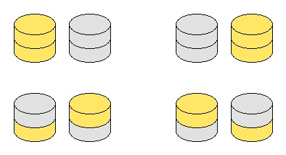

Gary and Sally play a game using gold and silver coins arranged into a number of vertical stacks, alternating turns. On Gary's turn he chooses a gold coin and removes it from the game along with any other coins sitting on top. Sally does the same on her turn by removing a silver coin. The first player unable to make a move loses.
An arrangement is called fair if the person moving first, whether it be Gary or Sally, will lose the game if both play optimally.
Define $F(n)$ to be the number of fair arrangements of $n$ stacks, all of size $2$. Different orderings of the stacks are to be counted separately, so $F(2) = 4$ due to the following four arrangements:

You are also given $F(10) = 63594$.
Find $F(9898)$. Give your answer modulo $989898989$